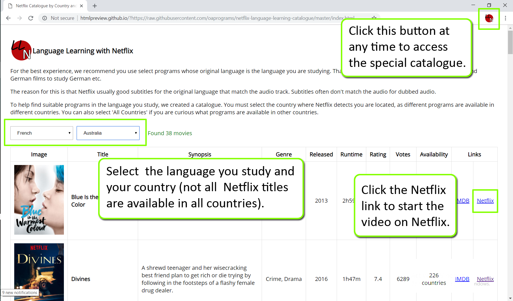
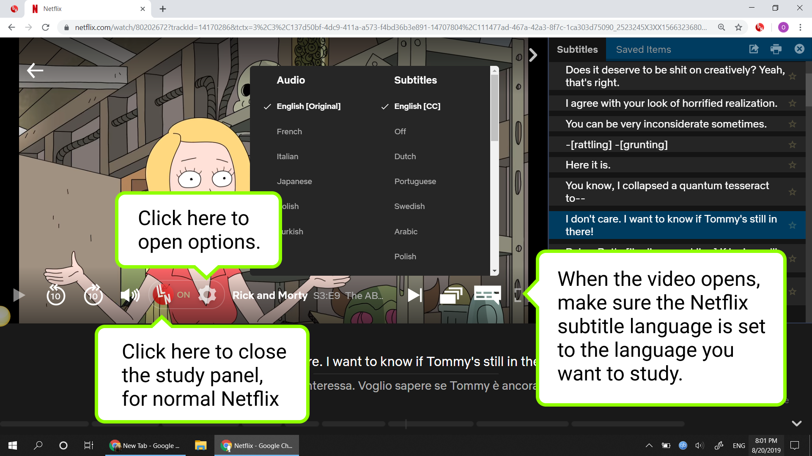
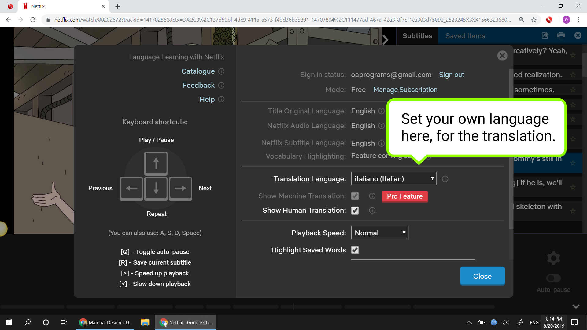
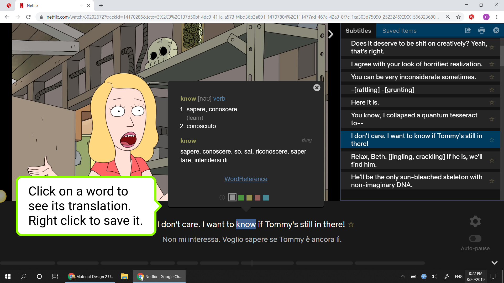

Thanks for installing Language Learning with Netflix!
Our software is an 'extension' for the Google Chrome browser. Extensions work with Chrome, giving the browser new capabilities. Now when you open a video on Netflix, you will have new capabilities that are helpful for studying languages.
Catalogue
We created a special catalogue to help you find Netflix titles with high-quality subtitles in the language you study. The titles in the catalogue should all work well with our extension.
You can access the catalogue at any time by clicking the extension icon, by the address bar.
Basic Use
  The player can grey-out less common words, to allow you to focus the words that are more important for you at your level. For beginners, try setting the drop-down to 300-800 words. For intermediate level, try 1500-2500. If you find you know all the words that are shown in solid black, you are ready to move up a level. This tool doesn't give perfect results, but we think you will still find it helpful.
The autopause checkbox controls whether the player should automatically pause playback at the end of every subtitle. Try leaving it on initially.
You may prefer to use keyboard keys to control the player. The relevant keys are:
- 'a' for the previous subtitle.
- 's' to repeat a subtitle.
- 'd' to for the next subtitle.
- 'space bar' to play/pause playback

Study Tips
If you are wondering how best to use the extension, our advice would be to do the following.
As a beginner, with every subtitle:
- Listen to the audio a couple of times without looking at the text (use the 's' keyboard key). Listen carefully to the sounds, and try and pick out what meaning you can.
- Listen to the audio again while reading the text in the original language. At this point, you have hopefully understood some of the meaning.
- Refer to the translation to get the full meaning. Listen to the audio again.
- Check a word or two with the pop-up dictionary, but don't spend too long worrying about the exact meaning of every word.
- Listen to the audio a couple more times. The sentence and it's meaning should seem fairly familiar now when you hear it.
- Advance to the next sub ('d' key) and repeat.
As an intermediate student, with every subtitle:
- Listen to the audio without looking at the text (use the 's' keyboard key). Hopefully you understand 50%+ of the meaning.
- Listen to the audio again while reading the text in the original language. At this point, you have hopefully understood mostly.
- Refer to the translation to get the full meaning. Look up any still unknown words with the pop-up dictionary.
- Listen to the audio once more.
- Advance to the next sub ('d' key) and repeat.
When you have reached an advanced level:
- Listen to the audio without looking at the text (use the 's' keyboard key). Hopefully you understand 80%+ of the meaning.
- If required, refer to the translation or look up any still unknown words with the pop-up dictionary.
- Listen to the audio once more.
- Advance to the next sub ('d' key) and repeat.
For all levels, if there's something tricky, or there's some new structure you don't really understand, don't get stuck on it for long. Keep moving through the subs. It's already quite helpful to be exposed the new structure, and be able to associate some meaning to it. If it's something important that you should learn, you'll see it again soon anyway, and you'll gain more knowledge about how it works.
You can also use a feature in the extension that greys-out infrequent words. A key to making fast progress in language learning is knowing what you can ignore, so you can focus on the really important words and structures.
Spend an hour or so working in this way every day, if you can. Your task is to 'digest' as much material as you can, and focus on listening. Use traditional language courses also, the Assimil, Linguaphone courses (original series), FSI courses etc. are very good. These provide a structured introduction to the grammar. Also try to find a conversation partner.
Further Reading
Here's a nice video which illustrates a good perspective for using the extension.
There is a longer guide to language study here (written by one of the developers of LLN).We hope you find our extension useful, and that you enjoy using it. Please feel free to contact us at LanguageLearningExtension@gmail.com
Best Regards, David and Ognjen